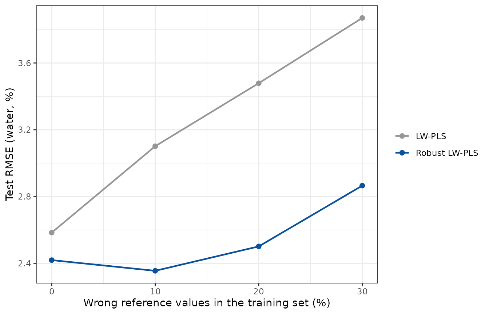
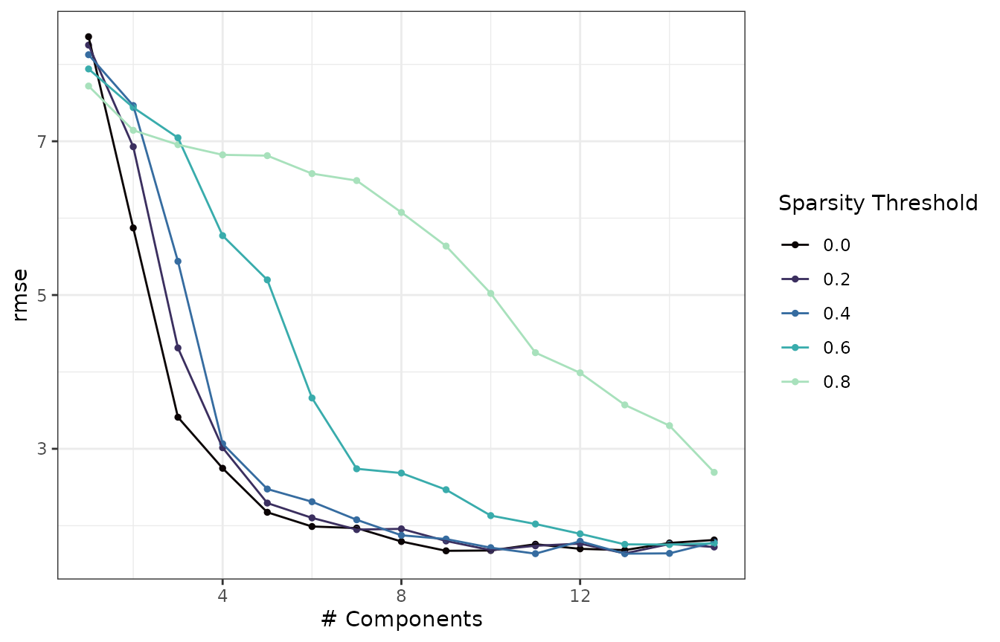

The local models of LW-PLS can be made robust to
outliers in the training data and sparse, so that each
one keeps only the predictors that matter around its query. Both are
options of the "lwpls" engine and of
lwpls_fit(), and they can be combined.
library(lwpls)
library(parsnip)
library(rsample)
library(tune)
library(workflows)
library(yardstick)
library(ggplot2)
data(meats, package = "modeldata")
meats <- meats[, !names(meats) %in% c("fat", "protein")]
set.seed(123)
meats_split <- initial_split(meats, prop = 0.75)
meats_train <- training(meats_split)
meats_test <- testing(meats_split)Robust LW-PLS
Why
LW-PLS already gives tiny weights to training samples that are far from the query, so outliers far away have little influence. Outliers among the neighbors of the query are a different matter: a wrong reference value (vertical outlier) or an unusual spectrum (leverage point) close to the query enters its local model with a large weight.
With robust = TRUE, every local model is fitted by
partial robust M-regression (PRM; Serneels et al., 2005). Each training
sample gets the weight
\[ \omega_i \, w_i^r \, w_i^t, \]
the product of its similarity weight \(\omega_i\), a weight \(w_i^r\) that decreases with its residual in
the local model, and a weight \(w_i^t\)
that decreases with its distance to the center of the local scores. The
local model is refitted with the new weights until it is stable. The
weights come from the Fair function (default) or the Hampel function
(weight_function = "hampel"), which gives a zero weight to
the most outlying samples. All the medians that PRM uses are weighted by
the similarity weights, so that the robust model stays local.
Example: wrong reference values
We replace 20% of the water contents of the training set by wrong values, shifted by 15 to 30 percentage points, as could happen with sample mix-ups or transcription errors. The test set is left untouched.
contaminate <- function(data, fraction, seed = 1) {
set.seed(seed)
bad <- sample(nrow(data), round(fraction * nrow(data)))
shift <- sample(c(-1, 1), length(bad), replace = TRUE) * runif(length(bad), 15, 30)
data$water[bad] <- data$water[bad] + shift
data
}
meats_train_20 <- contaminate(meats_train, 0.2)The outliers are also in the assessment sets of the resamples, where
their errors would dominate the usual RMSE and favor the model that
follows them. We tune with the trimmed RMSE instead, which leaves out
the 20% largest errors (trimmed_rmse(), provided by
lwpls):
set.seed(2)
folds_20 <- vfold_cv(meats_train_20, v = 5)
grid <- expand.grid(num_comp = c(4, 6, 8, 10, 12), localization = c(0.5, 1, 2, 4))
tune_lwpls <- function(robust) {
wflow <- workflow(
water ~ .,
lwpls(num_comp = tune(), localization = tune()) |>
set_mode("regression") |>
set_engine("lwpls", robust = robust)
)
res <- tune_grid(wflow, folds_20, grid = grid, metrics = metric_set(trimmed_rmse))
finalize_workflow(wflow, select_best(res, metric = "trimmed_rmse"))
}
lwpls_wflow <- tune_lwpls(robust = FALSE)
robust_wflow <- tune_lwpls(robust = TRUE)Robust models are refitted for each number of components, so tuning them takes longer than tuning ordinary LW-PLS models.
We then train both tuned workflows on training sets with 0% to 30% of wrong reference values and measure their errors on the clean test set:
fractions <- c(0, 0.1, 0.2, 0.3)
test_rmse <- function(wflow, fraction) {
fitted <- fit(wflow, contaminate(meats_train, fraction))
rmse_vec(meats_test$water, predict(fitted, meats_test)$.pred)
}
results <- data.frame(
fraction = rep(fractions, 2),
model = rep(c("LW-PLS", "Robust LW-PLS"), each = length(fractions)),
rmse = c(
vapply(fractions, test_rmse, numeric(1), wflow = lwpls_wflow),
vapply(fractions, test_rmse, numeric(1), wflow = robust_wflow)
)
)
results
#> fraction model rmse
#> 1 0.0 LW-PLS 2.583581
#> 2 0.1 LW-PLS 3.101320
#> 3 0.2 LW-PLS 3.478736
#> 4 0.3 LW-PLS 3.869655
#> 5 0.0 Robust LW-PLS 2.418944
#> 6 0.1 Robust LW-PLS 2.354993
#> 7 0.2 Robust LW-PLS 2.501034
#> 8 0.3 Robust LW-PLS 2.865060
ggplot(results, aes(100 * fraction, rmse, color = model)) +
geom_line(linewidth = 0.8) +
geom_point(size = 2) +
scale_color_manual(values = c("LW-PLS" = "#969696", "Robust LW-PLS" = "#08519C")) +
labs(
x = "Wrong reference values in the training set (%)",
y = "Test RMSE (water, %)",
color = NULL
) +
theme_bw()
The error of ordinary LW-PLS grows with the number of wrong reference values, while the robust local models are hardly affected. Both models were tuned on the contaminated training set, which is why the robust model is also better without contamination here. On clean data, robust models are usually a little less efficient than ordinary ones: use them when outliers are expected, and compare both by resampling with a robust metric.
Sparse LW-PLS
With sparsity \(\eta >
0\), the local models are fitted by sparse NIPALS (SNIPLS;
Hoffmann et al., 2015): the weight vector of each component is
soft-thresholded at \(\eta \max_j
|w_j|\), so that the predictors with small weights are dropped.
Each local model then selects its own predictors, here the wavelengths
that matter around the query. sparsity is a tuning
parameter:
set.seed(2)
folds <- vfold_cv(meats_train, v = 5)
sparse_wflow <- workflow(
water ~ .,
lwpls(num_comp = tune(), localization = 0.5, sparsity = tune()) |>
set_mode("regression")
)
sparse_res <- tune_grid(
sparse_wflow,
resamples = folds,
grid = expand.grid(num_comp = 1:15, sparsity = c(0, 0.2, 0.4, 0.6, 0.8)),
metrics = metric_set(rmse)
)
show_best(sparse_res, metric = "rmse", n = 5)
#> # A tibble: 5 × 8
#> num_comp sparsity .metric .estimator mean n std_err .config
#> <int> <dbl> <chr> <chr> <dbl> <int> <dbl> <chr>
#> 1 11 0.4 rmse standard 1.64 5 0.149 pre0_mod53_post0
#> 2 13 0.4 rmse standard 1.64 5 0.161 pre0_mod63_post0
#> 3 13 0.2 rmse standard 1.64 5 0.211 pre0_mod62_post0
#> 4 14 0.4 rmse standard 1.64 5 0.183 pre0_mod68_post0
#> 5 9 0 rmse standard 1.67 5 0.112 pre0_mod41_post0
autoplot(sparse_res, metric = "rmse") +
scale_color_viridis_d(option = "mako", end = 0.9) +
theme_bw()
Moderate thresholds keep the accuracy of the dense local models while
dropping the wavelengths with small weights from each of them; very
large thresholds drop too much information. Sparse models without
robustness give all the numbers of components from a single fit, so
tuning num_comp costs nothing extra.
sparse_wflow |>
finalize_workflow(select_best(sparse_res, metric = "rmse")) |>
last_fit(meats_split) |>
collect_metrics()
#> # A tibble: 2 × 4
#> .metric .estimator .estimate .config
#> <chr> <chr> <dbl> <chr>
#> 1 rmse standard 1.47 pre0_mod0_post0
#> 2 rsq standard 0.975 pre0_mod0_post0Sparse and robust
Both options together give local sparse partial robust M-regression (SPRM; Hoffmann et al., 2015):
sprm_fit <-
lwpls(num_comp = 6, localization = 2, sparsity = 0.4) |>
set_mode("regression") |>
set_engine("lwpls", robust = TRUE) |>
fit(water ~ ., data = meats_train_20)
sprm_fit
#> parsnip model object
#>
#> Locally-weighted PLS (regression)
#>
#> Training samples: 161
#> Predictors: 100 (standardized)
#> Components: 6
#> Localization: 2
#> Similarity: Euclidean
#> Neighbors: all (161)
#> Sparsity: 0.4 (SNIPLS)
#> Robust: PRM, Fair weights (c = 4)
rmse_vec(meats_test$water, predict(sprm_fit, meats_test)$.pred)
#> [1] 2.521161References
- Serneels, S., Croux, C., Filzmoser, P. and Van Espen, P. J. (2005). Partial robust M-regression. Chemometrics and Intelligent Laboratory Systems, 79(1–2), 55–64.
- Hoffmann, I., Serneels, S., Filzmoser, P. and Croux, C. (2015). Sparse partial robust M regression. Chemometrics and Intelligent Laboratory Systems, 149, 50–59.